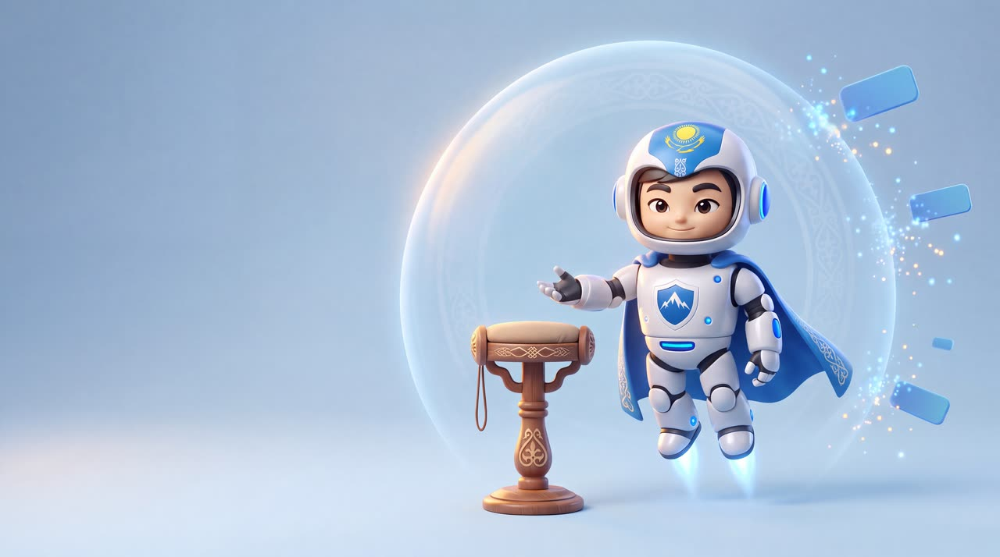
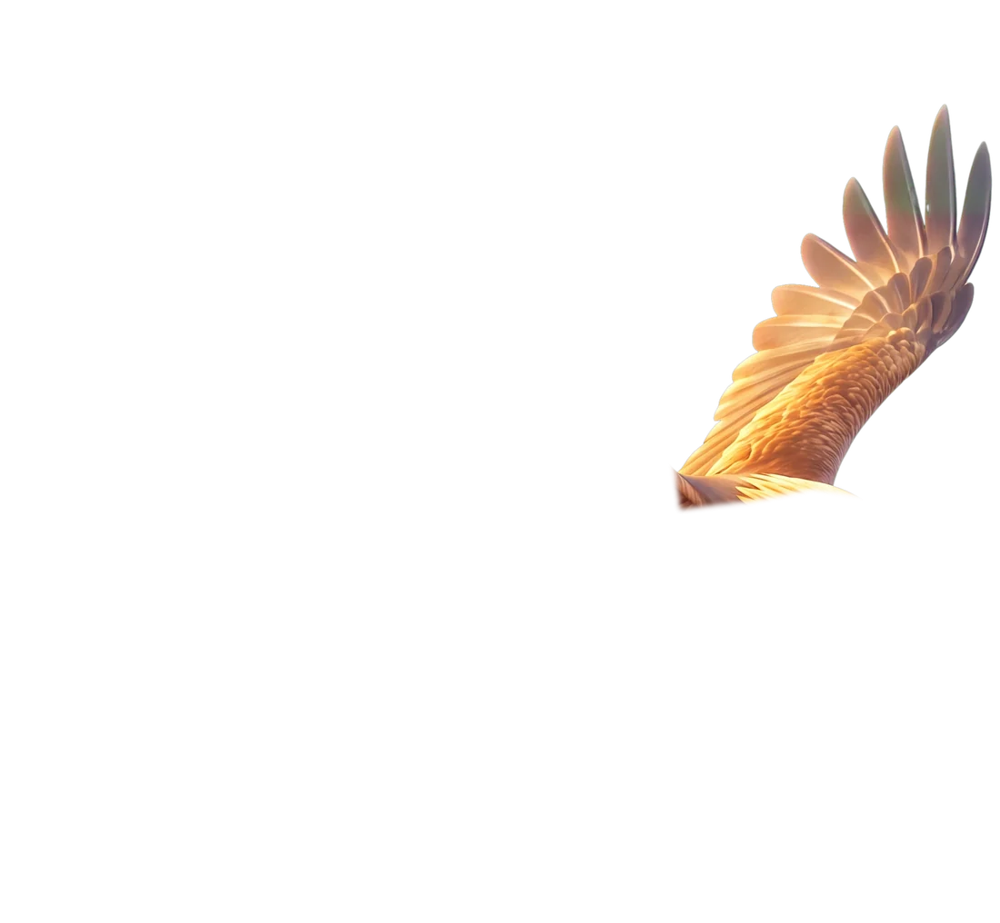
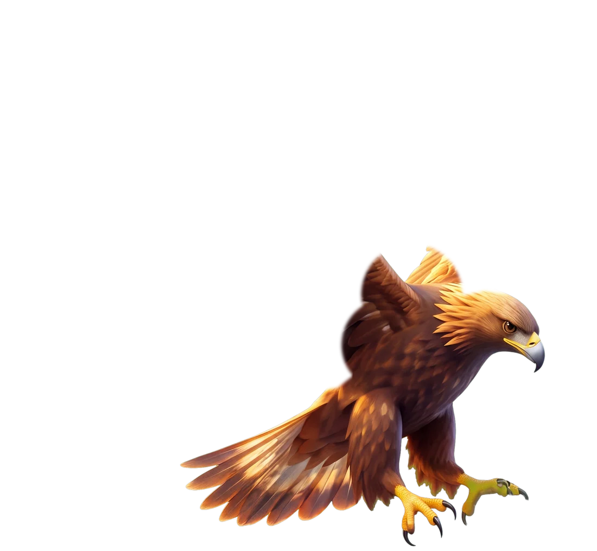
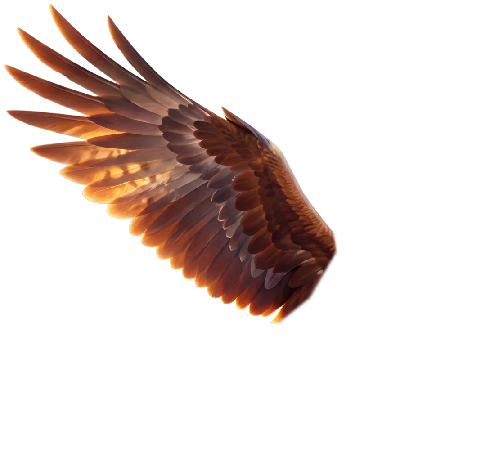

Сервис
фильтрации
интернета
Убираем трекеры и рекламу на твоих устройствах.
Меньше рекламы и трекеров везде: на телефоне, компьютере, в телевизоре. Фильтруем на уровне сети, значит уберём трекеры и рекламу, встраиваемые площадкой. Вживлённую в видео — не уберём.
Что это значит для тебя?Трекеры реже догоняют тебя персонализированной рекламой и меньше о тебе знают, а ты реже видишь то, что хотел бы кто-то другой, чтоб ты видел.
По-казахски «тұғыр» — опора, насест, на который садится ловчая птица. Наш сервис — такая опора для твоего интернета.
Доступ по приглашению, все детали в инвайте, а он в телеграме.